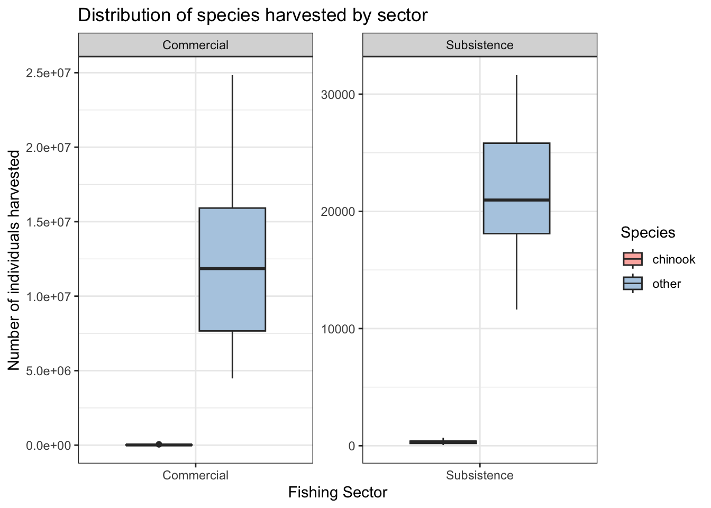
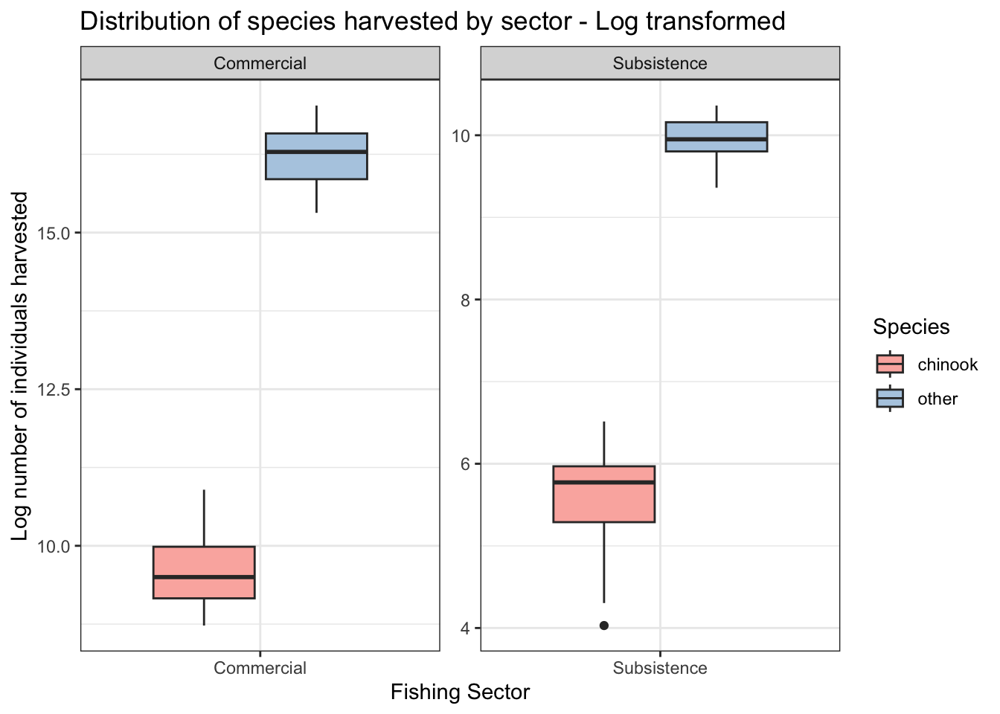
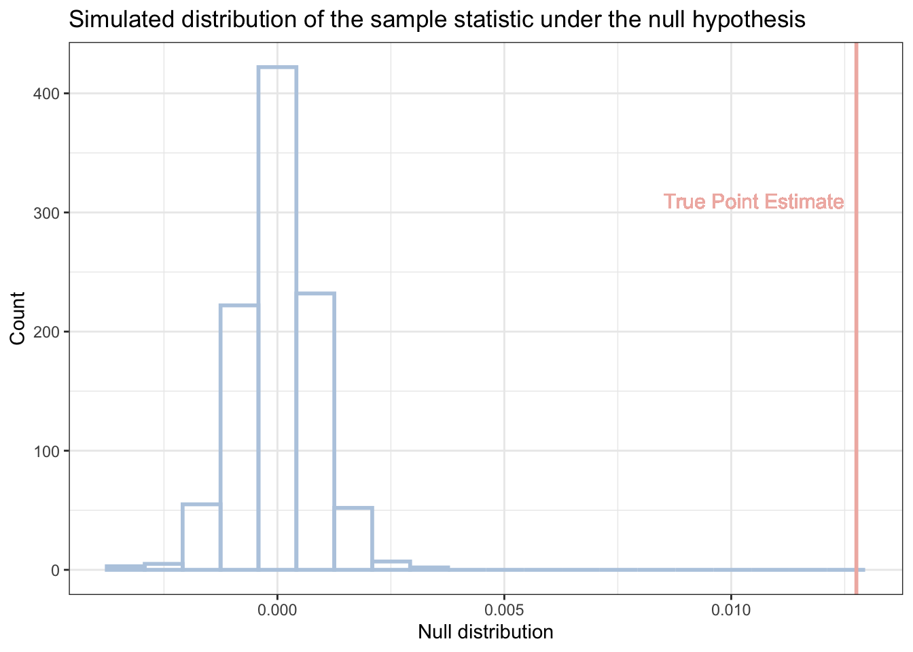

# Load libraries
library(tidyverse)
library(kableExtra)
# Load data
harvest <- read_csv("Harvest_All_Sectors.csv")In the Aleutians, summer is the highly anticipated “Sockeye (aanux̂)1 Season”. For many of the Indigenous (Unangan) residents, fishing is not only a way to make a living - it is the way to live. Fishing provides income, food to sustain a family for the year, and cultural connection to our land, community, and ancestors.
For me, fall is the highly anticipated “Care Package Season”. When there is enough, my family always shares (udigdada) the bounty. Down in the mainland, annual care packages filled with Alaska’s summer harvests keep me connected to my Aleutian family and culture. Salmonberry (alagnax̂) and mossberry (qaayux̂) jelly, pickled putchkis (saaqudax̂), dried salmon and halibut (udax̂), smoked salmon (qam dimiĝii), and if I’m lucky caribou (itx̂ayax̂) are tastes of home in the Aleutians delivered to me in the Pacific Northwest. We turn these ingredients into traditional dishes like fish pie (piruugax̂) and stewed caribou and gravy over rice (Aluutagaaq), and we make fry bread (alaadikax̂) to go along with them. While Salmon is abundant in these gifts, the prized Chinook (chaguchax̂) rarely makes its way to us down south.
Because of my Aleutian ties, I am innately curious about human-salmon systems. Sam Cisk, data science educator (and mentor for building this website), pointed me towards the State of Alaska People and Salmon Project (SASAP). The project included an NCEAS working group data team, and they published open-source, up-to-date datasets regarding people and salmon throughout Alaska. I think that this project was wildly cool, and work like this is what keeps me inpired while pursuing an environmental data science career!
In this analysis for my final project for EDS 222 - Statistics for Environmental Data Science, I use a SASAP dataset to explore the relationship between fishing sector and harvest of the beloved Chinook salmon. Read on to learn more about my analysis, or see my GitHub repository!
Background
Salmon are crucial to the health and cultural wellbeing of Aleut/Unangan communities along the eastern Aleutians and Alaskan Peninsula. Of the 5 Pacific salmon species, Chinook salmon hold particular cultural significance. They are also the largest, and fetch one of the highest values per pound on the commercial market 2.
For Aleutian communities, there is very little separation between commercial and subsistence fishing activities. Often, subsistence fish are retained to fill freezers as “homepack” from commercial harvests 3. This makes understanding participation in these fishing sectors very complex.
The State of Alaska Salmon and People Project (SASAP) is a collaboration of Indigenous and non-Indigenous researchers, scholars and community leaders working to produce and share integrated, accurate, and up-to-date information on Alaska’s salmon and people systems. They compiled 125 data sets into an open-source data portal that makes relevant salmon information accessible and usable by Alaskans wishing to advocate on their own behalf for a better salmon future. In recognition of the complex relationship between commercial and subsistence harvests, they uniquely derive estimated subsistence harvest from a combination of subsistence permit returns and post-season household survey data.
Using their dataset, Harvest of Salmon across Commercial, Subsistence, Personal Use, and Sport Fish sectors, Alaska, 1995-2016, I aim to explore how Chinook salmon harvest varies between commercial and subsistence fishing sectors.
Data details
I am using a dataset from the SASAP data portal that counts harvest of the 5 Pacific salmon species across fishing sectors in Alaska from 1995-2016. The time range for the data starts in 1975, but it isn’t until 1995 that we see all 4 sectors represented in the data.
- Access: https://knb.ecoinformatics.org/view/doi%3A10.5063%2FF1HM56Q3
- File:
Harvest_All_Sectors.csv - Citation: Jeanette Clark, & Alaska Department Fish Game, Division Commercial Fisheries Alaska Department Fish Game, Division Sport Fish Alaska Department Fish Game, Division of and of of and of of and of Subsistence. (2019). Harvest of Salmon across Commercial, Subsistence, Personal Use, and Sport Fish sectors, Alaska, 1995-2016. Knowledge Network for Biocomplexity. doi:10.5063/F1HM56Q3.
Hypothesis
Considering the cultural significance that Chinook salmon hold in Unangan communities, it is possible that the proportion of Chinook salmon harvested will be greater in the subsistence sector than in the commercial sector. However, there is also a monetary incentive for harvesting Chinook for commercial purposes, as they are the largest Pacific species and fetch a high value on the market.
Despite their high commercial value, I hypothesize that the proportion of Chinook salmon harvested is greater in the subsistence sector than the commercial sector.
To explore this hypothesis, I use a randomization test to explore the question:
Is the proportion of Chinook salmon harvested greater in the subsistence sector than the commercial sector?
- Null hypothesis: The proportion of Chinook salmon harvested is not greater in the subsistence sector than the commercial sector.
- Alternative hypothesis: The proportion of Chinook salmon harvested is greater in the subsistence sector than the commercial sector.
Analysis
Setup
Data cleaning
The data includes harvest counts for all Alaska regions. For this analysis, I am only interested in the Alaska Peninsula and Aleutian Islands:
# Filter harvest data to the Alaska Peninsula and Aleutian Islands
apai_harvest <- harvest |>
filter(SASAP.Region == "Alaska Peninsula and Aleutian Islands")Next, I want to categorize sector into two groups: subsistence and commercial. On the ground, personal use and subsistence catches are nearly identical in harvest methods and use. The personal use sector was created in response to the enactment of the state’s subsistence priority law, which precluded some individuals from participating in customary and traditional subsistence fisheries because the stocks they fish are not classified as customary and traditional use stocks 4. Because of this, I will group personal use into the subsistence category.
# Replace all "Personal Use" with "Subsistence"
apai_harvest$sector <- str_replace_all(apai_harvest$sector, "Personal Use", "Subsistence")
# Check that Personal Use is no longer in dataset
unique(apai_harvest$sector)[1] "Commercial" "Sport Fish" "Subsistence"I want to compare Chinook salmon to all other species. By grouping all other salmon species into one group, I will be able to calculate total harvest for Chinook and other species by sector and year.
From 1975-1984, there is only data for commercial harvest. I want to only include years that have data for both the commercial and subsistence sectors, so I will filter the data to 1985-2016. Lastly, I will finish my data cleaning by filtering down to the two sectors of interest, Subsistence and Commercial.
chinook_harvest <- apai_harvest |>
mutate(species = ifelse(species == "chinook", "chinook", "other")) |>
filter((sector == "Commercial") | (sector == "Subsistence")) |>
filter(year >= 1985 & year <= 2016) |>
group_by(year, sector, species) |>
summarize(harvest = sum(harvest, na.rm = TRUE), .groups = "drop")Visualize the relationship
First, I take a look at the distribution of species harvest between the two sectors:
Code
ggplot(chinook_harvest, aes(x = sector, y = harvest, fill = species)) +
geom_boxplot() +
facet_wrap(~sector, scale = "free") +
scale_fill_brewer("Species", palette = "Pastel1") +
labs(y = "Number of individuals harvested",
x = "Fishing Sector",
title = "Distribution of species harvested by sector") +
theme_bw()
Since the difference in magnitude of Chinook harvest compared to all other species is so large, it makes comparing the distributions difficult to interpret. To normalize the differences for the sake of visualization, I log transform harvest:
Code
ggplot(chinook_harvest, aes(x = sector, y = log(harvest), fill = species)) +
geom_boxplot() +
facet_wrap(~sector, scale = "free") +
scale_fill_brewer("Species", palette = "Pastel1") +
labs(y = "Log number of individuals harvested",
x = "Fishing Sector",
title = "Distribution of species harvested by sector - Log transformed") +
theme_bw()
I am also interested to see the proportion of Chinook of the total harvest between sectors:
Code
ggplot(chinook_harvest, aes(x = sector, y = harvest, fill = factor(species))) +
geom_col() +
facet_wrap(~sector, scale = "free") +
scale_fill_brewer("Species", palette = "Pastel1") +
labs( x = "Fishing Sector",
y = "Number of individuals harvested",
title = "Total Chinook Harvest by Sector") +
theme_minimal()The proportion of Chinook salmon harvested is a very small fraction of the whole. This makes sense, as Chinook abundance is relatively low compared to overall salmon abundance in the North Pacific 5. This makes the differences between sectors challenging to visually interpret. However, it seems that there is a higher proportion of Chinook harvested in the subsistence sector. It is important to notice the difference in the y-axes across all of these plots.
Hypothesis testing by randomization
I choose a randomization test for this analysis because it is a simple and straightforward way to compare the difference in proportions between two categories in my data. Since randomization tests make no underlying assumptions about the data, I do not need to check for normality before jumping in.
Step 1: State the null and alternative hypotheses:
- Null hypothesis: The proportion of Chinook salmon harvested is not greater in the subsistence sector than the commercial sector.
- Alternative hypothesis: The proportion of Chinook salmon harvested is greater in the subsistence sector than the commercial sector.
Step 2: Calculate the point statistic:
The relevant sample statistic for my hypothesis is a difference in proportions between Chinook total harvest / other total harvest in the commercial and subsistence sectors.
# Find chinook proportion of total harvest in each sector
chinook_prop <- chinook_harvest |>
group_by(species, sector) |>
summarise(species_harvest = sum(harvest, na.rm = TRUE), .groups = "drop") |>
group_by(sector) |>
summarize(proportion = species_harvest[species == "chinook"] / sum(species_harvest))Code
# Display percent of Chinook salmon in each harvest in a table
chinook_prop |>
mutate(proportion = round(proportion*100, 2)) |>
kbl(col.names = c("Fishing sector", "Percent Chinook salmon of total harvest"),
caption = "Table showing the percent of the total harvest that is Chinook salmon from 1985-2016. Chinook salmon made up 1.41% of the total salmon harvest in the subsistence sector, while Chinook only made up 0.14% of the total harvest in the commercial sector.") |>
kable_styling(full_width = FALSE,
bootstrap_options = c("striped", "hover"),
position = "left")| Fishing sector | Percent Chinook salmon of total harvest |
|---|---|
| Commercial | 0.14 |
| Subsistence | 1.41 |
# Calculate difference in proportions between sectors
pe <- chinook_prop$proportion[2] - chinook_prop$proportion[1]
pe[1] 0.01275766The difference in Chinook salmon harvested as a percentage of the overall harvest between subsistence and commercial sectors is 1.28%.
Step 3: Quantify the uncertainty
Use randomization to simulate the distribution of the sample statistic under the null hypothesis.
# For reproducability
set.seed(2222)
# Randomization test
null_dist <- replicate(1000, {
chinook_prop <- chinook_harvest |>
mutate(sector = sample(sector, n())) |> # Shuffling happening here
group_by(species, sector) |>
summarise(species_harvest = sum(harvest, na.rm = TRUE), .groups = "drop") |>
group_by(sector) |>
summarize(proportion = species_harvest[species == "chinook"] / sum(species_harvest))
# Calculate difference in proportions between sectors
pe <- chinook_prop$proportion[2] - chinook_prop$proportion[1]
pe
})
# Visualize null distribution
ggplot(tibble(null_dist), aes(null_dist)) +
geom_histogram(bins = 20, color = "#B8CCE1", fill = NA, linewidth = 1) +
geom_vline(xintercept = pe, color = "#F0B7B0", linewidth = 1) +
geom_text(aes(x = 0.0105, y = 310, label = paste("True Point Estimate")),
color = "#F0B7B0", size = 4) +
labs(x = "Null distribution",
y = "Count",
title = "Simulated distribution of the sample statistic under the null hypothesis") +
theme_bw()
Under the null hypothesis, the sample statistic is normally distributed and centered around 0. The true point statistic from the data is out to the right.
Step 4: Calculate probability of the point estimate under the null
# Calculate the p-value
pval <- sum((null_dist) > (pe)) / length(null_dist)
print(pval)[1] 0The p-value 0 is less than the threshold, 0.05. So, I am able to reject the null hypothesis and say that there is a 0% chance that the relationship is due to random chance. I find that the proportion of Chinook salmon harvested is in fact greater in the subsistence sector than the commercial sector.
Interpretation and Further Investigation
Limitations:
Subsistence harvest data is an estimate based on household surveys and permit returns. It is extremely difficult to obtain reliable subsistence harvest data in these small communities.
The data I use for running the randomization test is highly aggregated, missing nuance that may exist on a finer scale.
This is an extremely simplified analysis of a very complex system. The results I found, though an interesting starting point for further analysis, should be interpreted for educational purposes only. This workflow was created as the final assignment for the graduate course EDS 222: Statistics for Environmental Data Science in the MEDS program at the Bren School of Environmental Science & Management. Throughout my project, it was my goal to apply concepts and techniques learned in class to a question about a real-world system, not to necessarily draw any reliable scientific conclusions from the study.
That said, my results have piqued my interest. What is this suggesting about the way Aleutian communities prioritize cultural significance and monetary incentive? Are we seeing the results of fisherman preferences or fishery sector escapement counts and bag limits? Would I see the same results if I had considered the proportion of Chinook harvested in these fishing sectors over time? What if I added other parts of the system, such as declining Chinook abundance, or Chinook escapement counts from subsistence fisheries? The questions are endless, and the data that SASAP provided is quite comprehensive. Further investigation using these datasets could yield some extremely interesting results, with potentially high value for Unangan people and Aleutian fishing communities.
Note:
I switch between talking about Unangan people and the broader Aleutian fishing communities throughout this analysis. Both Indigenous and non-Indigenous residents of the Aleutian Islands and Alaskan Peninsula participate in commercial and subsistence fishing activities, with Indigenous fishers only making up a small portion of the population. Drawing on my personal experience in these tight-knit communities, cultural practices regarding salmon carry across Indigenous and non-Indigenous members alike. Because of this, I take liberties applying “cultural significance” to all community members in the region.
Footnotes
In this section, when possible, I will be using the traditional Aleut language, Unangam Tunuu. All words are translated in the Aleutian Pribilof Islands Associaton’s Traditional Foods Glossary↩︎
Alaska Department of Fish and Game. (2023). 2023 preliminary Alaska Commercial Harvest and Exvessel Values. https://www.adfg.alaska.gov/static/fishing/pdfs/commercial/2023_preliminary_salmon_summary_table.pdf↩︎
SASAP. (n.d.). Alaska Peninsula/Aleutian Islands Alaska Peninsula/Aleutian Islands : SASAP : State of Alaska Salmon and People. https://alaskasalmonandpeople.org/region/alaska-peninsula-aleutian-islands/↩︎
Jeanette Clark, & Alaska Department Fish Game, Division Commercial Fisheries Alaska Department Fish Game, Division Sport Fish Alaska Department Fish Game, Division of and of of and of of and of Subsistence. (2019). Harvest of Salmon across Commercial, Subsistence, Personal Use, and Sport Fish sectors, Alaska, 1995-2016. Knowledge Network for Biocomplexity. doi:10.5063/F1HM56Q3.↩︎
Brendan Connors, Gregory T Ruggerone, James R Irvine, Adapting management of Pacific salmon to a warming and more crowded ocean, ICES Journal of Marine Science, 2024;, fsae135, https://doi.org/10.1093/icesjms/fsae135↩︎
Citation
BibTeX citation:
@online{kochuten2024,
author = {Kochuten, Marina},
title = {Chinook {Salmon} {Harvest}},
date = {2024-12-12},
url = {https://marinakochuten.github.io/blog-posts/chinook-harvest/},
langid = {en}
}
For attribution, please cite this work as:
Kochuten, Marina. 2024. “Chinook Salmon Harvest.” December
12, 2024. https://marinakochuten.github.io/blog-posts/chinook-harvest/.